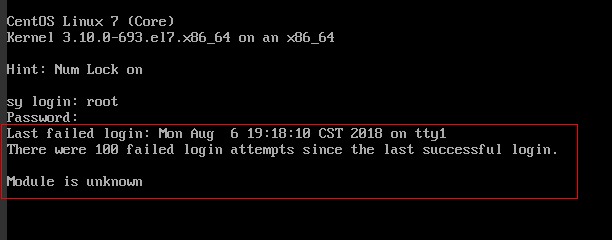
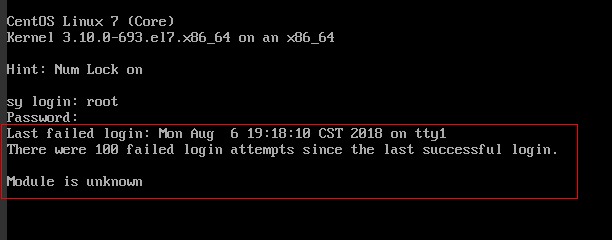
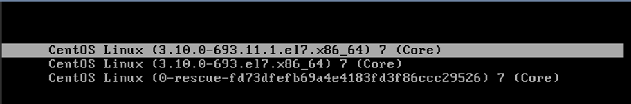
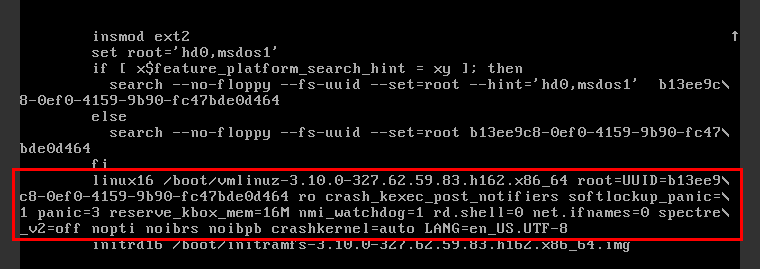
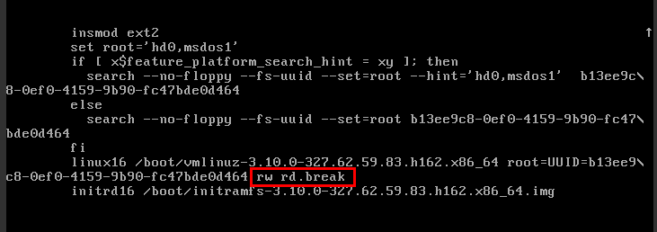

Symptom
When you attempt to remotely log in to a Linux ECS, the system displays the error message "Module is unknown".
Figure 1 Module is unknown



- To resolve this issue, restart the ECS and enter the rescue mode.
- Restarting the ECS may interrupt services. Exercise caution when performing this operation.
Root Cause
The file in the /etc/pam.d/ directory was modified by mistake.
Solution
- Enter the single-user mode.The following uses CentOS 7 as an example:
- Restart the ECS and click Remote Login.
- Click Ctrl+Alt+Del in the upper part of the remote login panel to restart the ECS.
- Press the up arrow key to prevent automatic system startup. When the kernels are displayed, press e to enter the editing mode.Figure 2 Entering the kernel editing mode
 The grub file is encrypted by Euler images by default. Before entering the edit mode, you need to contact customer service to obtain username and password.
- Locate the row containing linux16 and delete the parameters you do not require.
- Change ro to rw for mounting the root partition with read-write permissions.
- Add rd.break and press Ctrl+X.Figure 3 Before the modification
Figure 4 After the modification
 - Run the following command to go to the /sysroot directory:
# chroot /sysroot
- Run the following command to view the system log for error files:
- Comment out or modify the error line in the error files displayed in the system log.
- Restart the ECS and try to log in to it again.